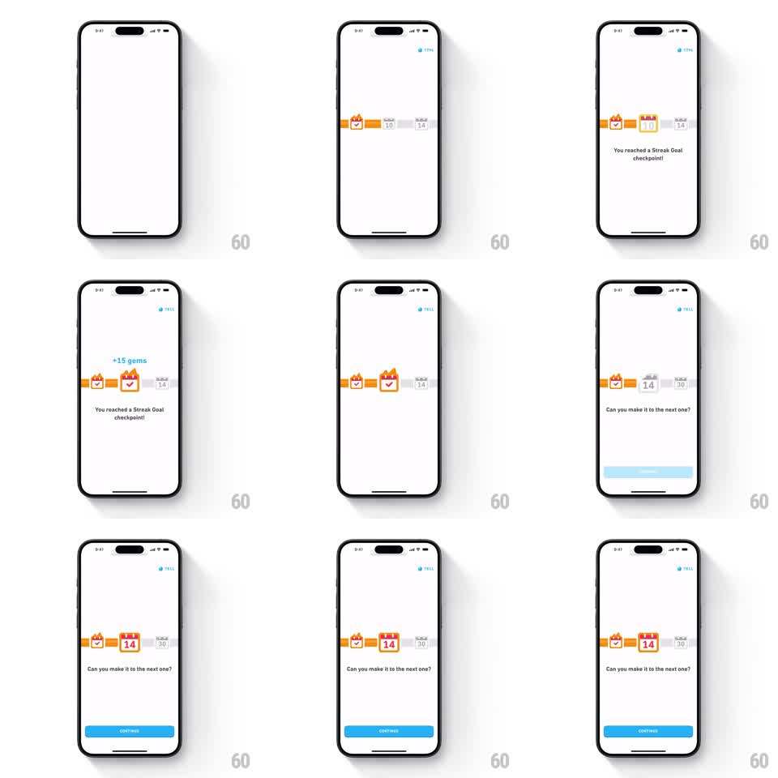

Media
Frame-by-frame

Rebuild this animation 1:1: Duolingo's 10-day streak-goal checkpoint - on the white goal timeline, the track fills to the 10-day calendar card, which upgrades with spring physics and fires "+15 gems" into the top-right gem counter, then the timeline slides to tease the 14-day goal with a bounce as CONTINUE slides up.

Rebuild this animation 1:1: Duolingo's 10-day streak-goal checkpoint - on the white goal timeline, the track fills to the 10-day calendar card, which upgrades with spring physics and fires "+15 gems" into the top-right gem counter, then the timeline slides to tease the 14-day goal with a bounce as CONTINUE slides up. ## Integration Integration: stack-agnostic spec - springs given as stiffness/damping, timed motions as duration + curve; map every value to your framework and animation library of choice. ## Scene White screen with a gem counter top-right. Centered horizontal timeline: orange track with milestone calendar cards (7 completed, 10 targeted, 14 upcoming in gray). Messages below the timeline: "You reached a Streak Goal checkpoint!" then "Can you make it to the next one?" Blue CONTINUE button appears at the bottom. ## Motion spec Pattern: timeline checkpoint with gem reward and next-goal tease. - The track fills from the 7-day card to the 10-day card (500ms, ease-out). - The 10-day card upgrades on arrival: scale 0.8 -> 1.15 -> 1.0 (spring ~320/16), border turns orange, its flame ignites. - Reward: "+15 gems" text pops above the card (scale 0 -> 1.1 -> 1.0, 200ms), then a gem flies to the top-right counter along an arc (450ms, ease-in) and the counter ticks up (digit roll, 200ms) with a pill pulse. - Message 1 fades up (200ms). - The timeline scrolls left (450ms ease-in-out), centering the gray 14-day card, which bounces (translateY 0 -> -12pt -> 0, spring ~300/18) while staying gray. - Message swaps to "Can you make it to the next one?" (crossfade 200ms); CONTINUE slides up (280ms ease-out). ## Calibration - The gem flight connects reward to counter - no flight, no tick. - The 14-day card teases without igniting: bounce yes, flame no. ## Reduced motion Card shows upgraded state and counter shows the new total immediately; scroll crossfades; button fades in. ## Don't miss - The "+15 gems" label is orange and floats above the card before the flight. - The gem counter lives in the status bar area and is visible throughout.